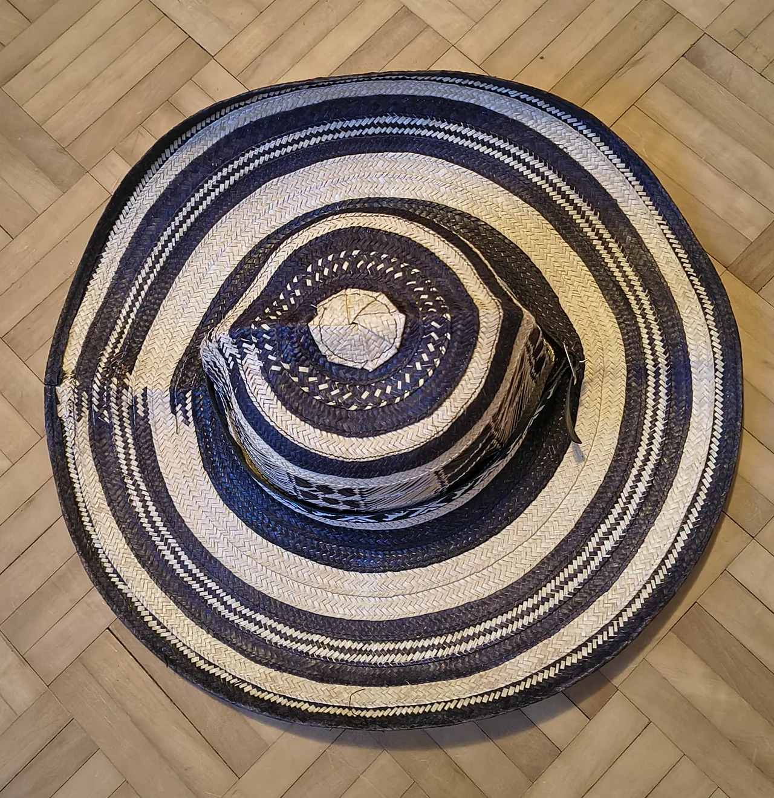
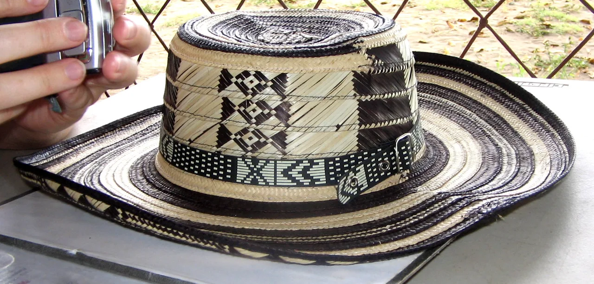

En las sabanas de Córdoba y Sucre, las tejedoras zenúes deshojan la caña flecha con los dientes y sumergen las fibras en lodo ferruginoso para tejer una espiral que se dobla sin quebrarse. Una indagación sobre el sombrero vueltiao, las pintas geométricas y la cosmología trenzada del Caribe colombiano.
Quien viaje por las sabanas calientes de Córdoba y Sucre, donde el río Sinú y el San Jorge abren sus brazos perezosos en un laberinto de ciénagas y playones cenagosos, sentirá muy pronto que el sol del Caribe no es una simple circunstancia del clima, sino un tirano inapelable que funde el horizonte en un temblor de vapor blanco y obliga a hombres y animales a buscar el cobijo de cualquier sombra vegetal. En esa llanura implacable de ganado cebú y cercas de alambre de púas, bajo la copa generosa de un totumo o en el corredor de tierra pisada de una casa de palma amarga, se escucha un susurro continuo, menudo y seco, parecido al correteo de un insecto entre hojas secas: es el rumor de dos manos que trenzan con una velocidad que desorienta a la mirada.

Esa mujer pertenece al pueblo Zenú, una nación indígena que los conquistadores españoles creyeron haber aniquilado en las masacres de las encomiendas y en las fiebres de los lavaderos de oro, pero que sobrevivió replegada en el resguardo de San Andrés de Sotavento y en el municipio de Tuchín, guardando en la punta de sus dedos un saber botánico y geométrico que no necesita de papel ni de tinta para perpetuarse. Lo que esa tejedora sostiene entre el regazo no es un objeto decorativo para regalar a los turistas en los aeropuertos: es un sombrero vueltiao, un monumento flexible de caña flecha que se enrosca sobre sí mismo en una espiral infinita de luz y sombra.
Para comprender la profundidad histórica de este sombrero es imprescindible recordar que los antepasados zenúes fueron los ingenieros hidráulicos más asombrosos de la América precolombina. Mil años antes de la llegada de las tropas de Pedro de Heredia, el pueblo Zenú había transformado más de quinientas mil hectáreas de ciénagas en una red gigantesca de canales artificiales y camellones agrícolas paralelos que canalizaban las crecientes periódicas de los ríos, retenían el limo fértil y permitían cosechar maíz y yuca en medio del agua. Cuando uno contempla desde una avioneta los vestigios arqueológicos de aquellos canales sobre las sabanas del San Jorge, descubre con pasmo que la cuadrícula de zanjas y terraplenes tiene la mismísima geometría ondulada que las mujeres reproducen hoy en las pintas del sombrero. El tejido de caña flecha es, literalmente, el plano aéreo de una civilización que aprendió a domesticar la inundación sin destruir el río.
El viaje de este artefacto comienza en las orillas húmedas de los caños, donde crece silvestre la caña flecha, una gramínea de tallos altos y flexibles que los botánicos llaman Gynerium sagittatum. Cortar la caña exige conocer la luna y las mareas de la tierra: si se corta tierna, se pudre con el sereno; si se corta pasada, la fibra se vuelve quebradiza y rechaza la torsión. Los campesinos cortan las varas al amanecer y las despojan de sus hojas exteriores; luego, con una pequeña cuchilla afilada o sujetando el nervio central entre los incisivos, van raspando la corteza verde hasta aislar la ripia, una cinta vegetal delgada como un fideo plano que guarda en su interior la blancura pura de la médula.
Pero para que exista el sombrero vueltiao hace falta el negro, y ese negro no proviene de una anilina química importada en tambores de plástico desde Alemania. El negro zenú es una proeza alquímica nacida de la conversación entre las plantas y la tierra profunda. Las tejedoras toman la mitad de las fibras de caña y las cocinan en ollas de barro con hojas machacadas de caña agria o de bijao; ese primer hervor abre los poros vegetales y los impregna de taninos ácidos. Inmediatamente después, antes de que la caña se enfríe, las mujeres llevan las madejas húmedas al barrial, a esas hondonadas fangosas de las ciénagas donde el lodo descansa negro, espeso y cargado de sedimentos ferruginosos.
El raspado de la caña es una faena que curte los dedos hasta dejarlos insensibles al corte. En los patios de Tuchín no hay mesas de carpintero: las artesanas se sientan en taburetes bajos de cuero crudo o directamente sobre petates de junco, sosteniendo el tallo con los pies descalzos mientras la cuchilla vuela a lo largo de la vara con una cadencia hipnótica. De cada tallo se extraen dos calidades distintas de fibra: la palma blanca, suave y flexible, que se obtiene de las capas internas del vegetal y que servirá para la trama luminosa; y la costilla exterior, más dura y fibrosa, que se reserva para ser sumergida en el barro de las ciénagas y transformarse en la osamenta negra del diseño. Nada se desperdicia: los residuos de la médula vegetal se usan para alimentar a los cerdos domésticos o para encender el fogón de leña donde hierve el café de la mañana.
Allí, metidas en el agua cenagosa hasta los muslos, entierran las fibras en el fango y las dejan reposar durante toda una noche bajo el peso del lodo podrido. El hierro disuelto en el cieno reacciona con los taninos vegetales en una combustión fría que tiñe la fibra desde adentro: no es una película superficial que pueda descascararse con la uña, sino una transformación molecular que convierte el vegetal en un mineral flexible. Al día siguiente, cuando las mujeres desentierran las madejas y las lavan en el arroyo claro, la caña emerge vestida de un negro mate, profundo, aterciopelado y eterno, que jamás perderá su negrura aunque soporte cuarenta años de aguaceros y sol caribeño.
Comienza entonces la liturgia del trenzado, esa arquitectura del entrelazamiento donde el tiempo se mide por pares de ripias. El sombrero ordinario, el que usan los jornaleros para chapear el monte con machete de rula, se teje con quince pares de hebras; es un sombrero recio, grueso, que protege de los rayos solares pero tiene la rigidez de un caparazón. Pero cuando la tejedora aspira a la maestría suprema, toma su cuchilla y raspa cada hebra hasta dividirla en dos o en tres hilos casi invisibles, y emprende la confección de un sombrero de diecinueve, veintiún o veintitrés pares.
Conviene detenerse en la liturgia del conteo de las ripias, porque en esa aritmética mental radica la diferencia entre la tosquedad y la gracia. La tejedora no utiliza lápiz, regla ni cuadrícula de papel milimetrado para orientarse en la intrincada maraña de hebras; su memoria es una memoria cinestésica, muscular, transmitida de abuelas a nietas a través de canciones de cuna y regaños cariñosos durante las tardes calurosas. Mientras sus labios conversan sobre el precio de la yuca en la plaza o sobre el compadre que cayó enfermo de calenturas, sus dedos van contando: dos blancas por debajo, tres negras por encima, cuatro pares a la izquierda, cinco pares a la derecha. Si una sola ripia se cruza en falso, el error quedará grabado en la espiral como una cicatriz permanente que arruinaría la simetría del sombrero; pero la tejedora experta jamás yerra: su mano sabe lo que la vista apenas alcanza a distinguir bajo la penumbra del alero.
Tejer un sombrero vueltiao de veintitrés pares puede demandar más de un mes de labor ininterrumpida. La fibra es tan menuda y maleable que parece hilo de coser; los dedos de la artesana se mueven con una precisión milimétrica, cruzando y descruzando las cintas blancas y negras según una cuenta mental que no admite un solo despiste. La tela resultante posee una suavidad sedosa y una flexibilidad inverosímil: el dueño de un veintitrés pares puede enrollar su sombrero entero como si fuera un cigarro puro de tabaco negro, pasarlo a través del círculo de un anillo de bodas, guardarlo en el bolsillo de la camisa durante un viaje a caballo y luego, al sacarlo y sacudirlo en el aire, ver cómo recupera instantáneamente su copa redonda y sus alas airosas sin una sola arruga que delate el encierro.

Pero el verdadero asombro del sombrero vueltiao reside en las pintas, esas figuras geométricas en blanco y negro que adornan la copa y el ala exterior. Quien no sepa leerlas creerá que se trata de cenefas abstractas nacidas del capricho decorativo; quien conozca la cosmología zenú sabrá que está contemplando una biblioteca grabada en fibra vegetal. En las pintas vive la memoria de un pueblo anfibio que aprendió a convivir con el agua sin pretender dominarla: la flor de la mariposa, el diente de caimán, el ojo de la sardina, el rastro de la víbora cascabel, la pata de rana, el espinazo de pescado, la cruz del sol.
Las pintas que nacen de este conteo son un catálogo vivo de la biodiversidad caribeña. Está el pilón, que recuerda el mortero de madera dura donde las mujeres muelen el maíz para las arepas y la mazamorra; está el ojo de buey, un rombo concéntrico que reproduce la mirada mansa del ganado que pace en los playones; está la huella de tigre, una serie de manchas angulares que alertaban a los cazadores antiguos sobre la presencia del jaguar en los montes del Paramillo; y está la flor del limón, una estrella de ocho puntas que celebra la fragancia de los huertos campesinos. No hay vanidad artística en estos nombres: hay una ontología de la convivencia donde el ser humano no se coloca por encima de los animales o de las plantas, sino que se reconoce como una hebra más dentro de la gran trama que sostiene el universo.
Cada figura es un ideograma que condensa un mito, una advertencia ecológica o una geografía sagrada. Cuando la tejedora intercala una serie de rombos escalonados que los ancianos llaman la araña que teje el cielo, está reproduciendo la misma red cósmica que los orfebres zenúes fundían en pectorales de oro mil años antes de la llegada de las carabelas. El sombrero vueltiao es, en el sentido más estricto de la palabra, un mapa astronómico y un escudo protector: quien se lo cala sobre la frente lleva consigo la fauna de la ciénaga, los ojos de los ancestros y la sombra benévola de los dioses que vigilan la tierra.
La costura de la trenza es otra faena que demanda una destreza admirable. Una vez tejida una tira continua de varios metros de longitud llamada riata, entra en acción el cosedor con su máquina de pedal. La costura no sigue líneas rectas ni costados paralelos: empieza en un punto central diminuto llamado botón o encopetadura, y desde allí va girando en círculos concéntricos que van ensanchándose gradualmente. De ahí proviene el nombre vueltiao: del verbo dar vueltas, de esa espiral interminable que va cosiéndose borde con borde hasta moldear la copa profunda y desplegar el ala ancha que caerá sobre los hombros como un dosel protector.
Examinemos también la inteligencia ergonómica del sombrero una vez terminado y ajustado para el uso diario. El ala ancha no es una concesión a la elegancia: es un escudo indispensable contra el sol canicular que quema las sienes y agrieta los labios de quien trabaja a cielo abierto. Pero además, gracias a la curvatura calculada de las vueltas, cuando un aguacero tropical sorprende al campesino en medio del potrero, el agua resbala por la superficie aceitosa de la caña flecha sin empapar la copa y cae en cascada limpia por detrás de la espalda, manteniendo secos el cuello y el pecho del caminante. En el interior, una badana o tafilete de cuero suave absorbe el sudor de la frente, y el barboquejo —un cordón de algodón trenzado que se anuda debajo de la barbilla— impide que las ráfagas violentas del viento de la sabana se lleven el sombrero por los aires durante una cabalgata.
Resulta profundamente amargo, y es deber de la honestidad intelectual señalarlo, el abismo que separa la celebración retórica del sombrero vueltiao de la realidad material de quienes lo fabrican con sus manos. En el año 2004, el Congreso de la República de Colombia promulgó una ley solemne declarando al sombrero vueltiao Símbolo Cultural de la Nación. Desde entonces, no hay presidente de la república, ministro, reina de belleza ni futbolista de la selección nacional que no se haya colocado el sombrero ante las cámaras internacionales para proclamar con orgullo patriotero la grandeza del folclor colombiano.
Pero mientras las fotografías oficiales circulan por las cancillerías del mundo y las tiendas de artesanías de lujo en Bogotá o Cartagena venden un sombrero fino por sumas que equivalen al sueldo mensual de un profesional, en los caseríos de Tuchín y Guaymaral las familias tejedoras siguen habitando casas con paredes de caña amarga y piso de tierra, sin agua potable corriente ni puestos de salud dignos. El intermediario comercial, ese parásito inevitable de las cadenas del capitalismo criollo, llega los domingos al mercado del pueblo y compra las trenzas a precio de miseria, aprovechándose del hambre y de la urgencia del artesano.
Y sin embargo, a pesar del despojo y de la hipocresía del Estado, las mujeres zenúes se sientan cada mañana bajo la sombra del totumo a trenzar la caña flecha. No trenzan únicamente para conseguir unas monedas con qué comprar arroz y manteca: trenzan porque mientras sus dedos recuerden la cuenta de los pares y el dibujo de la flor del totumo, su pueblo seguirá existiendo. En un país desgarrado por la violencia de los terratenientes y el olvido de las instituciones, esa espiral de caña y barro negro es el testimonio sereno de que la belleza verdadera no se compra con leyes oficiales, sino que nace de la terquedad invencible de quienes se niegan a olvidar de dónde vienen.
Fuentes.
- Turbay, Luisa (1994). La trenza y el barro: El trabajo de la caña flecha en San Andrés de Sotavento. Artesanías de Colombia.
- Fals Borda, Orlando (1979). Historia doble de la Costa: Mompox y Loba. Carlos Valencia Editores.
- Plazas, Clemencia y Falchetti, Ana María (1981). Asentamientos prehispánicos en el bajo río San Jorge. Fundación de Investigaciones Arqueológicas Nacionales.
Investigación etnográfica y documental sobre la cestería de caña flecha en el resguardo indígena de San Andrés de Sotavento y Tuchín, Córdoba.
Fuentes consultadas el 19.11.2026. Análisis e interpretación: RUMMOR. Edición privada para revisión.